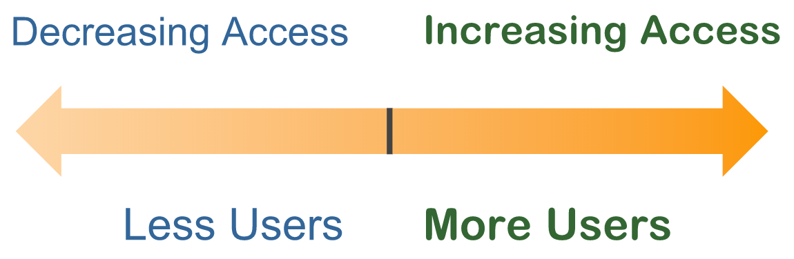

Video
Guide
Overview of Document Accessibility: Part 2
Because people and disabilities are so varied, it's not optimal to think in terms of absolutes––such as a document being “accessible” or “inaccessible.” Electronic document accessibility is a continuum––and there are often opportunities for improvement––similar to document usability.

The common goal of accessibility and usability is to reach the largest number of users.
Objectives
- Describe the meaning of POUR.
WCAG and Legal Requirements
While optimizing accessibility is an ongoing process, there are measures along the continuum that you can meet. The most widely-accepted measures for accessibility are found in the Web Content Accessibility Guidelines––referred to as “wɪk-kæg.” WCAG seeks to make web content Perceivable, Operable, Understandable, and Robust (POUR).
Perceivable
“Perceivable” means that all users can receive and recognize content regardless of disability. For example, images are not perceivable by people who are blind, and audio content is not perceivable by people who are deaf, so this content must be provided in other ways.
Operable
“Operable” means that users can navigate and interact with document content and functionality, such as links and embedded multimedia.
Understandable
“Understandable” means that users can interpret and process the content. It should be readable, legible, and consistent.
Robust
“Robust” means that the content and functionality works with the assistive technologies used by people with disabilities.
These four POUR principles—Perceivable, Operable, Understandable, and Robust—establish a solid framework for accessibility.
Guidelines and Success Criteria
There are 13 Guidelines that are grouped under each of these four principles. These are general goals to work towards in order to maximize accessibility. Success Criteria are provided as tests to measure conformance with the Guidelines.
There are three levels of conformance defined for Success Criteria: Level A, Level AA, and Level AAA. If your electronic documents don’t meet the Level A success criteria, you will likely exclude many users with disabilities from accessing your content. If you fail to meet the Level AA success criteria, then some users will likely experience more frustration, difficulty, or inefficiency in accessing your content.
In order to meet Level AA you must also meet all of Level A.
Meeting the success criteria for Levels A and AA is typically seen as the “standard” measure in accessibility laws, discrimination complaints or lawsuits, and procurement contracts. Level AAA success criteria may provide enhancements for some users with disabilities, but meeting all AAA requirements may not be possible, or appropriate.
The areas of WCAG that are relevant to electronic documents will be highlighted throughout this course.
Applications and Document Types
This course is designed to help you create accessible electronic documents in two widely-used applications––Microsoft Word and PowerPoint––and to export Word and PowerPoint documents to PDF. In this course, these processes are shown for both the Windows and Mac operating systems.
Upon completion of this course participants will be able to:
- Maximize the accessibility of the content and structure of documents created in Word and PowerPoint and,
- Review and optimize the accessibility of exported Tagged PDFs in Acrobat Professional.
Now that you have a general idea of some of the high-level issues that impact users with disabilities, and how the guidelines used to measure accessibility are organized––let’s start creating accessible electronic documents!